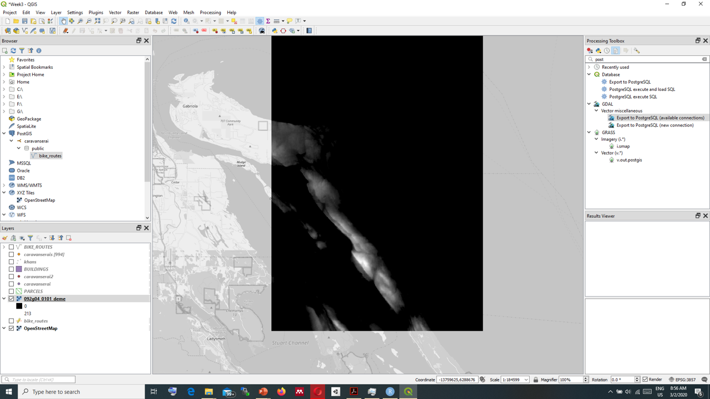
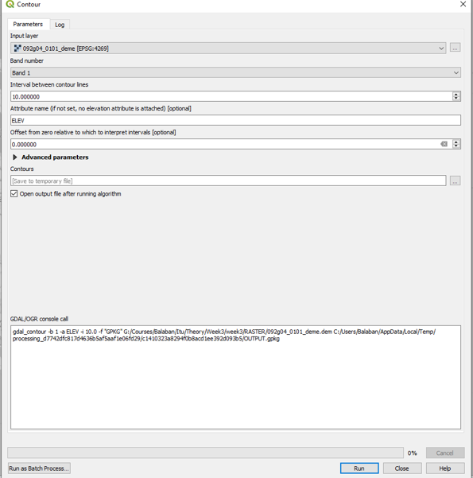
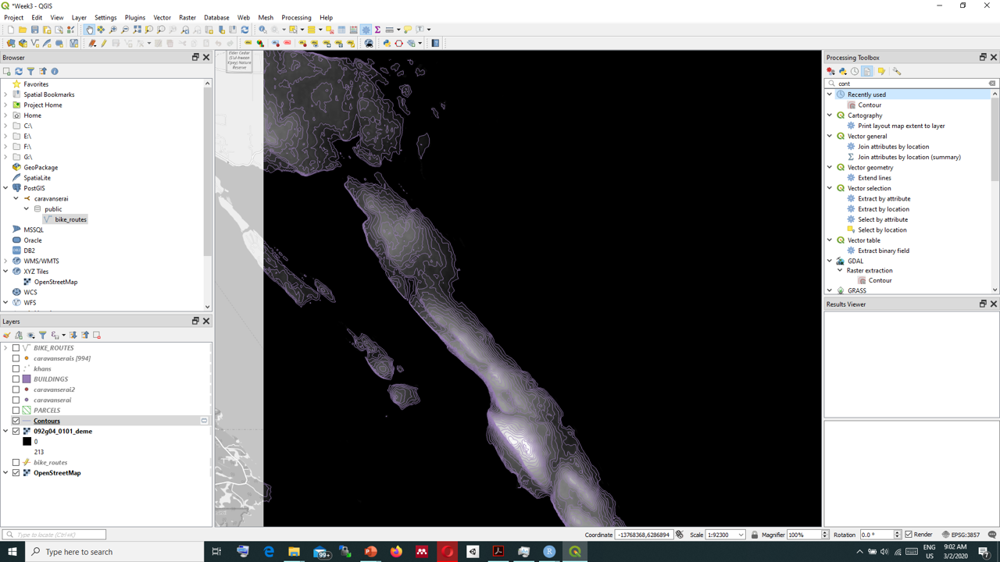

Chapter 4 Raster Data
- Image based
- Georeferencing
- TIFF
layer > add layer > add Raster layer
4.1 CRS - Coordinate Reference Systems
- 4326 – Google Earth
- Degrees – lat long
- globe
- 3857 – Google Maps
- Meters
- map
- Many others
4.2 Raster File types
4.2.1 WMS
WMS - Web map services: https://mrdata.usgs.gov/services/ofr20051294?request=GetCapabilities&service=WMS&version=1.3.0
4.2.2 DEM - Digital Elevation Model
DEM is special satellite image that represents elevation of the terrain in a raster graphic. Every pixel value represents elevation on the terrain.

DEM
We can add DEM images similar to other raster files.
We can convert raster DEM files to vector contour lines.
GDAL>Raster extraction>Contour

Contour

After extracting the contours